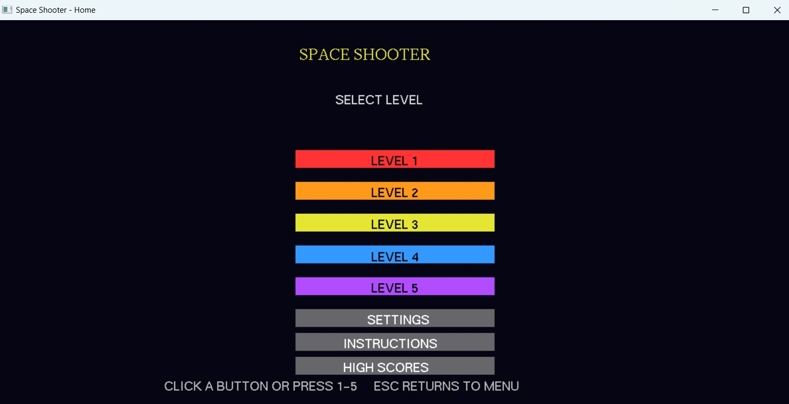
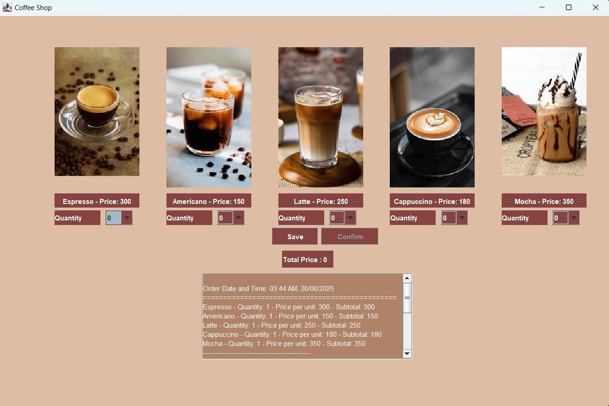
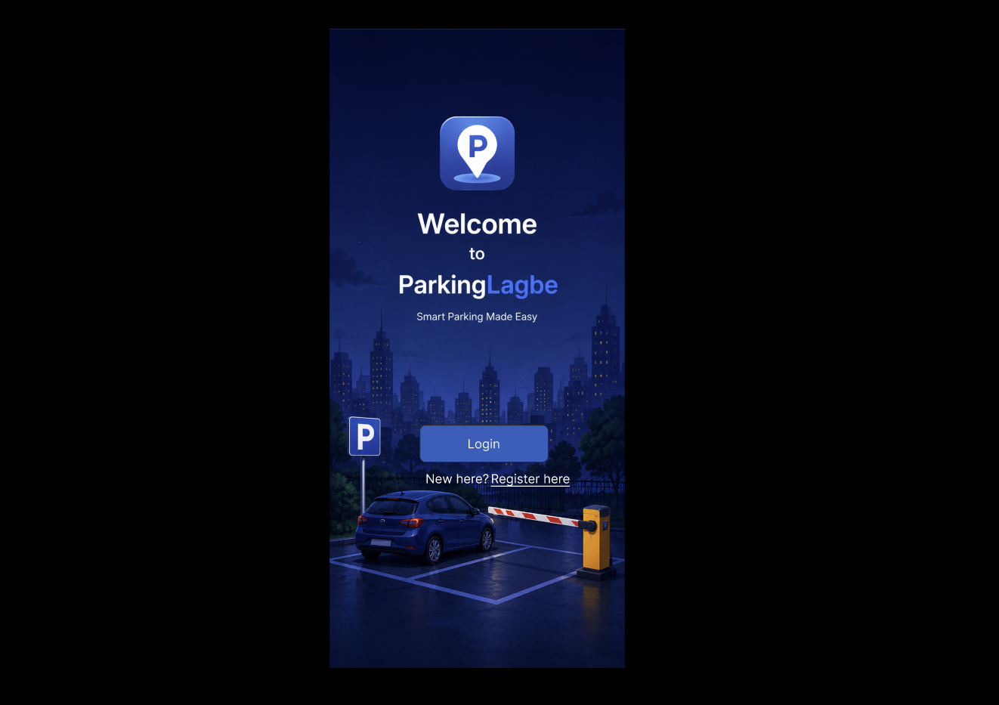

Space Shooter
Space Shooter is a 2D space shooter game developed using C++ and OpenGL/GLUT as a computer graphics project. The game features multiple levels with increasing difficulty, enemy encounters, projectile shooting mechanics, and boss battles. It demonstrates fundamental computer graphics concepts, including object rendering, geometric transformations, keyboard input handling, collision detection, and animation. The project combines interactive gameplay with practical implementation of graphics programming concepts.

Coffee Shop Management System
Coffee Shop is a beginner-friendly project focused on developing a graphical user interface (GUI) for a coffee shop application. It demonstrates the fundamentals of GUI design, including interface layout, visual components, and basic user interaction. The project serves as a foundation for learning desktop application development and can be extended with features such as menu browsing, order management, and billing functionality.

ParkingLagbe
Parking Lagbe is a Parking Management System is a software engineering project designed to simplify parking space discovery and management. The system connects vehicle owners with parking slot providers, allowing users to find suitable parking spaces while enabling providers to manage their available slots. It includes role-based functionality for Admin, Parking Slot Giver, and Vehicle Owner, supporting organized parking operations and improved user convenience. The project focuses on applying software engineering principles, including requirement analysis, system design, database management, and maintainable application development, to address everyday urban parking challenges.